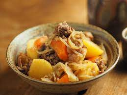

~Japanese Cuisine~ NIKUJAGA recipe
Classic Japanese cuisine NIKUJAGA recipe is simple to make and able to feel Japanese Umami taste.

Ingredients
- 3 Potatoes
- half of an onion
- half of a carrot
- 100g poke or beef
- 100g konnyaku
- 1 1/2cup Japanese broth
- 1/3cup soy sauce
- 1/3cup sweet sake
Procedure
- Cut potatoes and a carrot in bite-sized and cut an onion into wedges.
- Cut konnyaku in small pieces.
- Cut poke or beef in bite-sized.
- Put oil a little bit in a cookpan and fry poke or beef and a onion first.
- And then put potatoes, a carrot and konnyaku.
- Fry them in 5 minutes, put Japanese broth, soy sauce and sweet sake in it.
- After boiled, cook over a low heat in 15 minutes.
- Dish it
- Done!